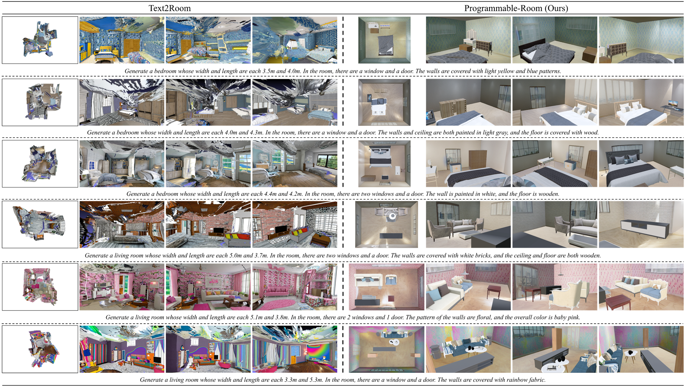
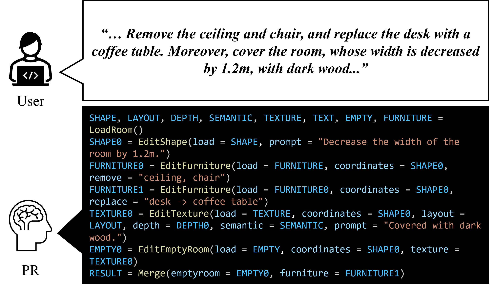

Diverse Shapes
One of the benefits of Programmable-Room is the creaetion of rooms with divese shapes. This is possible due to the new method, we developed, to generate a textured 3D room mesh from user-specified room shapes.

Programmable-Room interprets user-provided descriptions to create plausible 3D coordinates for room meshes, to generate panorama images for the texture, to construct 3D meshes by integrating the coordinates and panorama texture images, and to arrange furniture, allowing users to specify single or combined actions as needed. Inspired by visual programming (VP), Programmable-Room utilizes a large language model (LLM) to write a python program which is an ordered list of necessary modules for the various tasks given in natural language.
We developed most of the modules. For the texture generating module, we utilize a pretrained large-scale diffusion model to generate panorama images conditioned on text and visual prompts (i.e., layout, depth, and semantic map) simultaneously. Specifically, we accelerate the performance of panorama image generation by optimizing the training objective with 1D representation of panorama scene obtained from bidirectional LSTM.
Programmable-Room can create a textured and fully furnished 3D room mesh from a text instruction (Generating an empty room is also possible). Users can specify the room shape and size; the texture of the ceiling, walls, and floor; and furniture.
When Generating a textured and furnished 3D room mesh, Programmable-Room uses an LLM to generate python codes like below. The output of each line is visualized along with the corresponding code. In summary, three images (layout image, depth map, semantic map) are generated which follow the user-specified room shape, and texture. Then, the three images are used as visual prompts for generating a panorama texture image, which is then folded into an empty room mesh. After allocating appropriate furniture according to the room type, we gain the textured and fully furnished 3D room mesh.

One of the benefits of Programmable-Room is the creaetion of rooms with divese shapes. This is possible due to the new method, we developed, to generate a textured 3D room mesh from user-specified room shapes.
Using predifined modules, Programmable-Room can transfer a complicated instruction of multiple tasks into an arranged python code.
@article{park2021nerfies,
author = {Park, Keunhong and Sinha, Utkarsh and Barron, Jonathan T. and Bouaziz, Sofien and Goldman, Dan B and Seitz, Steven M. and Martin-Brualla, Ricardo},
title = {Nerfies: Deformable Neural Radiance Fields},
journal = {ICCV},
year = {2021},
}